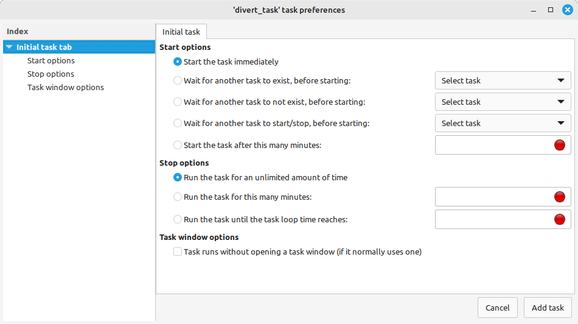

When you first run Axmud, the Setup wizard window asks you which tasks should be started automatically at the beginning of each session.
There are several lists of initial tasks. The main one - the so-called global initial tasklist - can be viewed from the object viewer window.
The object viewer window also lists the types of task that are available, including both built-in tasks and any tasks you have written yourself.
Axmud has a number of task scheduling options. When you click the Add initial button, this window will appear:

You'll probably never need any of these options, so you can click the Add task button right at the bottom of the window right away.
Besides the global initial tasklist, each world profile also has its own initial tasklist. These tasks are started every time you connect to the world. (They are also started if you change the current world profile with a ;setworld command.)
Tasks can be added to a profile's initial tasklist using the profile's edit window.
Other types of profile have their own initial tasklists, too. The character profile's initial tasks are started whenever you connect to the world and log in with that character.
Some aspects of a task's behaviour can be modified.
For example, the Divert task's window changes its background colour whenever a tell message is received. If you find the bright yellow uncomfortable, you can change it.
The current Divert task will reset itself automatically. The next tell message you receive will use the new colour.
Any changes you make to the current divert task are lost at the end of the session (or when you halt the task).
However, you can edit initial tasks, and any changes you make will be changes are retained between sessions.
In this example, any changes you make will be applied the next time you connect to any world. If you edit a world profiles's initial tasks, the changes will be applied the next time you connect to that world.
'Custom' tasks can be modified in the same way as initial tasks. However, unlike initial tasks (which usually start when you connect to a world), custom tasks can be started whenever you need them.
You can create a new custom task from the object viewer window.
All custom tasks must have a unique name. When the task preferences window opens, you can enter this name in the box near the top. (Once again, you will probably never use the scheduling options in the rest of the window.)
Enter a name like mywatch and then click the Add task button at the bottom of the window.
Once the custom task has been created, you can modify its behaviour.
You can modify the task's colours in the same way as before. Click the edit window's OK button when you're finished.
You can now start your custom Watch task at any time. All custom tasks are available when connected to any world.
;startcustomtask mywatch
;sct mywatch